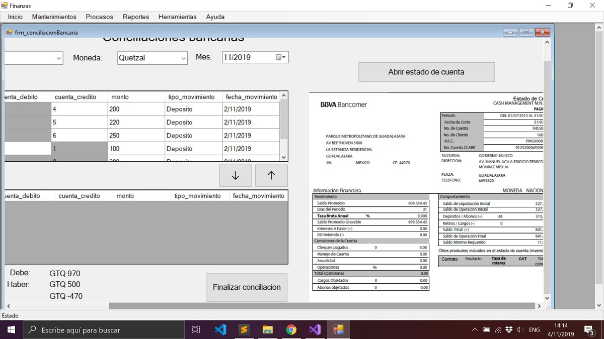
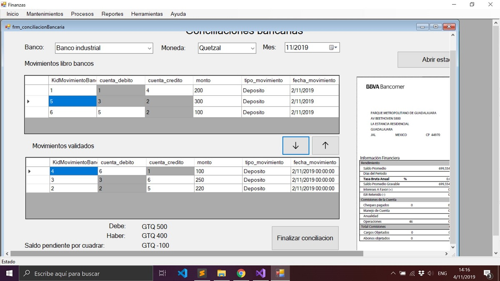
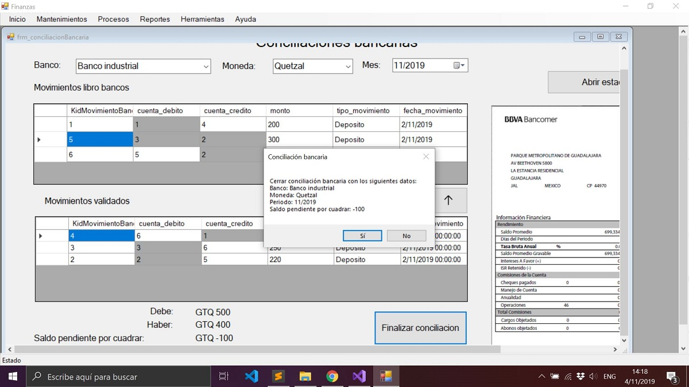

Conciliacion bancaria
1. Ingreso al Sistema:

2. Al ingresar al formulacio de conciliacion bancaria encontraremos algunos combo box en los que podemos filtrar por banco, moneda y fecha, del lado derecho tenemos la opcion para cargar el pdf que contiene nuestro estado de cuenta.

3. Con el estado de cuenta cargado, iremos comparando movimiento por movimiento, los que concuerden con el estado de cuenta provisto por el banco los trasladaremos hacia abajo con la flecha que apunta hacia abajo, NOTA: los numeros de cuenta que aparecen pintados en gris son los pertenecientes al banco que se esta evaluando.

4. Al finalizar la conciliacion bancaria presionamos el boton "finalizar conciliacion" para almacenar los datos en la base de datos.
